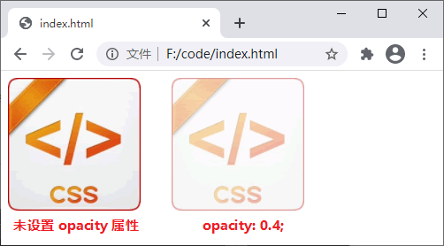
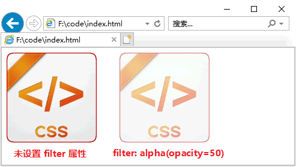

CSS透明度（opacity）
前面在学习《CSS颜色》时我们已经了解，通过 rgba()、hsla() 可以设置颜色的透明度，但是它们只能在定义颜色的同时设置透明度，无法对图像或者其它元素设置透明度。
CSS 中提供了一个 opacity 属性用来设置元素的透明度，它不仅对颜色有效，对图像或者页面中其它的元素也有效。其语法格式如下：
另外，在使用 opacity 属性时，还需要注意以下几点：
【示例】使用 opacity 属性设置元素的透明度：
IE8 或者更早版本的 IE 浏览器不支持 opacity 属性，若想要在这些浏览器中实现透明效果可以使用 filter 属性，语法格式如下：
【示例】使用 filter 属性设置元素的透明度：
为了让所有浏览器都可以实现透明效果，您可以同时定义 opacity 和 filter 两个属性，如下所示：
CSS 中提供了一个 opacity 属性用来设置元素的透明度，它不仅对颜色有效，对图像或者页面中其它的元素也有效。其语法格式如下：
opacity: number;
其中 number 为一个 0~1 之间的浮点数（小数），用来表示元素的透明度，值越小则越透明（0 表示完全透明，1 表示完全不透明）。另外，在使用 opacity 属性时，还需要注意以下几点：
- 当一个元素定义了 opacity 属性，并且其值小于 1 时，那么它的子元素也会拥有同样的透明度；
- 当一个元素定义了 opacity 属性，并且其值小于 1 时，将会重新定义该元素默认的 z-index 属性，如果其它的元素为非定位元素，那么该元素的堆叠级别将会高于其它元素；
- 如果定义的 opacity 属性值超过了指定的范围，那么则截取与之最相近的值，例如 1.5 将截取为 1。
【示例】使用 opacity 属性设置元素的透明度：
<!DOCTYPE html>
<html>
<head>
<style>
img {
width: 150px;
}
img:last-child {
opacity: 0.4;
margin-left: 30px;
}
</style>
</head>
<body>
<img src="./css.png" alt="">
<img src="./css.png" alt="">
</body>
</html>
运行结果如下图所示：

图：opacity 属性演示
图：opacity 属性演示
IE8 或者更早版本的 IE 浏览器不支持 opacity 属性，若想要在这些浏览器中实现透明效果可以使用 filter 属性，语法格式如下：
filter: alpha(opacity = number);
其中 number 的取值范围为 0~100，值越小则越透明。【示例】使用 filter 属性设置元素的透明度：
<!DOCTYPE html>
<html>
<head>
<style>
img {
width: 150px;
}
img.img_two {
filter: alpha(opacity=50);
margin-left: 30px;
}
</style>
</head>
<body>
<img src="./css.png" class="img_one">
<img src="./css.png" class="img_two">
</body>
</html>
运行结果如下图所示：

图：filter: alpha(opacity=x) 属性演示
图：filter: alpha(opacity=x) 属性演示
为了让所有浏览器都可以实现透明效果，您可以同时定义 opacity 和 filter 两个属性，如下所示：
p {
opacity: 0.5;
filter: alpha(opacity=50);
}
关注公众号「站长严长生」，在手机上阅读所有教程，随时随地都能学习。内含一款搜索神器，免费下载全网书籍和视频。

微信扫码关注公众号